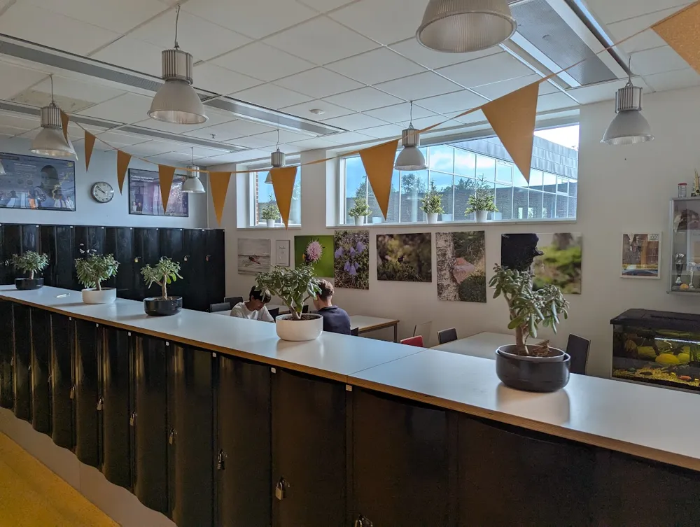

Insändare

Kurts äventyr
Kurt springer för fullt, han har bråttom. Han måste hitta sitt skåp och lämna sina böcker, tillsammans med hans böcker så har han en lapp, den där lilla lappen som vi alla fick på den där dagen. Den där dagen då det var dags att få sitt skåp. Med tanke på att kurt går ekonomi så bör väl hans skåp finnas i ekonomi korridoren, eller hur? Fan heller de kan du glömma, det är som att leta efter en nål i en höstack eller som att försöka hitta den där pennan längst ned i väskan, den pennan du var helt säker på att du la ned imorse. Det går för fasiken inte att hitta, Kurt har aldrig varit så borta sedan han hade orientering i 9:an. Och han letade så mycket att det slutade med att han döck upp i flen. Nu tänker ni flen? Hur fan kom han ditt? ingen aning, men frågan är vad fan är flen? Skitt samma huvudsaken är att kurt är helt lost eller som man kan säga, Heeeeeelt lorre.